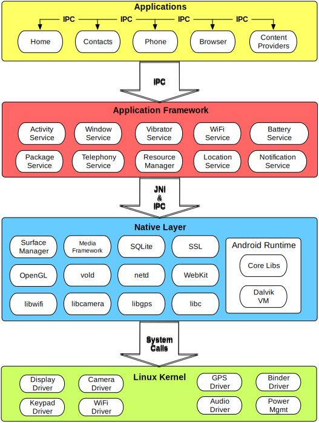
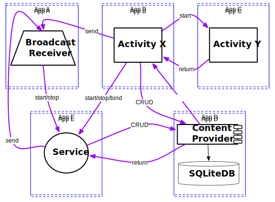
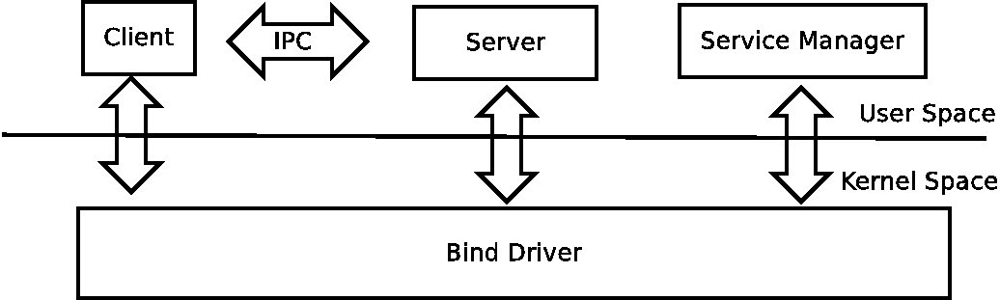
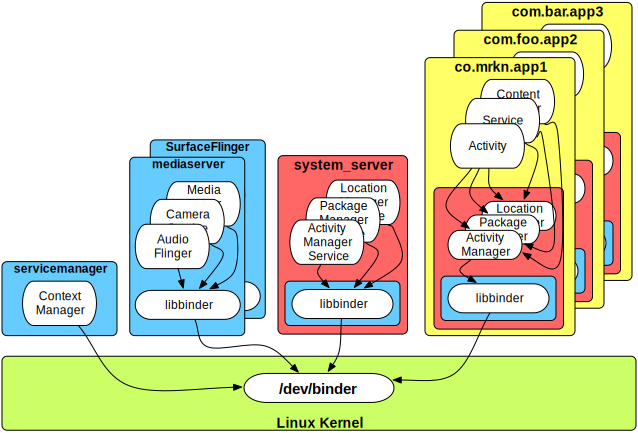

<!doctype html>
<html lang="en">
<head>
        <meta charset="utf-8">
        <!--<meta charset="gb2312">-->

		<title>Binder in Details I</title>

		<meta name="description" content="A framework for easily creating beautiful presentations using HTML">
		<meta name="author" content="Hakim El Hattab">

		<meta name="apple-mobile-web-app-capable" content="yes" />
		<meta name="apple-mobile-web-app-status-bar-style" content="black-translucent" />

        <!--<meta name="viewport" content="width=device-width, initial-scale=1.0, maximum-scale=1.0, user-scalable=no">-->
		<meta name="viewport" content="width=device-width, initial-scale=1.0, maximum-scale=1.0, user-scalable=yes">

		<link rel="stylesheet" href="reveal/css/reveal.min.css">
		<link rel="stylesheet" href="reveal/css/theme/default.css" id="theme">

		<!-- For syntax highlighting -->
		<link rel="stylesheet" href="reveal/lib/css/zenburn.css">

		<!-- If the query includes 'print-pdf', use the PDF print sheet -->
		<script>
			document.write( '<link rel="stylesheet" href="reveal/css/print/' + ( window.location.search.match( /print-pdf/gi ) ? 'pdf' : 'paper' ) + '.css" type="text/css" media="print">' );
		</script>

		<!--[if lt IE 9]>
		<script src="lib/js/html5shiv.js"></script>
		<![endif]-->
	</head>
    <body>
        <div class="reveal">
            <div class="slides">
                <section data-markdown data-separator="===" data-vertical='---'>
                    <script type="text/template">
                       ## Binder in Details part 1

                       lijin@routon
                       ===
                       ## 简介

                       Binder是Android系统进程间通信（IPC）方式之一。深入了解Binder并将之与传统 IPC做对比有助于我们深入领会进程间通信的实现和性能优化。 

                       ---
                       Information sharing
                    
                       ---
                       ## IPC
                       IPC（Inter-Process Communication，进程间通信）,顾名思意是在同一台机器之上不同进程之间通信的方法。在linux平台上现有的方式有：信号量，消息队列，共享内存，信号，管道以及套接字等。
                       ---
                       ## RPC
                       RPC(Remote procedure calls,远程过程调用),是相对于本地过程调用而言的。普通的过程调用就是在一个程序内函数间的调用，提供了一种将程序分解为不同模块的方式。 而远程过程调用是指在不同机器之间进行的函数间的调用，在一台机器上调用一个函数，底层通过一定的方式与远程机器上的某一个过程对应起来，然后将调用结果返回给调用方，使得在本地看起来就象是调用了一个本地的过程一样。
                       ---
                       ## 注意！
                       Binder 为IPC的一种方式，但其思想是RPC。其整体架构如同一个C/S架构的网络服务器。
                       ===
                       Why binder?
                       ---
                       
                       ---
                       每一个App都运行在独立的进程内，以达到以下效果：

                       * Security: 每一个进程都具有独立的标识，运行在独立的沙盒之中
                       * Stability: 若一个进程出了问题，它不能影响到其他的程序正确运行
                       * Memory management: 有些暂时不需要的进程可以被自动杀掉，以腾出内存运行新的应用

                       <b>事实上，一个App是可以包括多个进程的。</b>
                       ---
                       ### Problems
                       * bionic 不支持system V IPCs
                       * System V IPCs 在使用中容易忘记释放资源
                       ---
                       ### Binder Features
                       * 穿越进程边界，可以传递binder的引用
                       * 驱动添加调用者标识(UID/PID)
                       * 发送文件描述符
                       * 自带的很多Java类型可以marshalling
                       * 不但支持IPC，还支持进程内的调用
                       ---
                       ### Memory Efficiency
                       <table border="1" aligh="center">
                       <caption>不同IPC方式内存拷贝次数</caption>
                       <tr>
                           <th>IPC方式</th>
                           <th>内存拷贝次数</th>
                       </tr>
                       <tr>
                           <td>共享内存</td>
                           <td>0</td>
                       </tr>
                       <tr>
                           <td>binder</td>
                           <td>1</td>
                       </tr>
                       <tr>
                           <td>socket|pipe|msg_queue</td>
                           <td>2</td>
                       </tr>
                       </table>

                    </script>
                </section>
                <section data-markdown data-separator="===" data-vertical='---'>
                    <script type="text/template">
                    IPCs with Intents and ContentProviders
                    
                    ---
                    ### Intent
                    Intent是android不同组件之间异步通信的一种方式：

                    * 通信也可以发生在进程内及进程之间
                    * 允许点对点通信，以及Publish-Subscribe模式
                    * Intent自己描述要将要进行的操作以及该操作需要的数据

                    ---
                    ### ContentProvider
                    同步、且CRUD方式的API。
                    ---
                    ### 总结
                    * Intent和ContentProvider不像binder一样有良好的OOP模式
                    * Intent只支持异步通信
                    * 效率不足
                    * 实际上这两种方式建立在binder之上
                    </script>

                </section>
                <section data-markdown data-separator="===" data-vertical='---'>
                    <script type="text/template">
                    ## Binder基本架构
                    <ul>
                    <li> Server </li>
                    <li> Client </li>
                    <li> Service Manager </li>
                    <li> Binder Driver </li>
                    </ul>
                    ---
                    <!---->
                    
                    ---
                    ### Server

                    <ul>
                        <li>
                        提供服务：音视频编码、捕获，包管理，网络连接管理等;
                        </li>
                        <li>
                        确定每个服务访问参数
                        </li>
                    </ul>
                    ---
                    ### Client
                    服务请求者，通过binder接口请求服务器为之服务。
                    ---
                    ### Service Manager
                    类似于网络通信中的DNS服务，帮助客户端正确地找到欲通信的服务端（非匿名服务）。

                    注：匿名服务不经过Service Manager
                    ---
                    ### Binder Driver
                    binder的核心实现，在这里实现IPC的核心功能以及binder实体与引用间的转换。
                    </script>
                </section>
                <section data-markdown data-separator="===" data-vertical='---'>
                    <script type="text/template">
                    ## 尝试Binder
                    <ol>
                    <li> Java </li>
                    <li> C++ </li>
                    </ol>
                    ---
                    ### Local vs Remote Service
                    * local: In-process
                    * remote: Inter-Process
                    ---
                    startService vs bindService

                    * startService(): 调用者与服务之间没有关连，即使调用者退出了，服务仍然运行。
                    * bindService()：调用者与服务绑定在了一起，调用者一旦退出，服务也就终止

                    
                    ---
                    ### AIDL
                    Android Interface Definition Language

                    定义客户端和服务端交流时所使用的功能接口
                    ===
                    ## Example1:LedService(Java)
                    ---
                    ### Steps
                    * 编写ILedManager.aidl文件
                    * 继承ILedManager.stub编写LedService
                    * 向ServiceManager注册LedService
                    * 使用ILedManager接口（实际上为ILedManager.Proxy）
                    ---
                    AIDL:
                    <pre><code data-trim >
package android.hardware.tdevice;

interface ILedManager
{
    /* on : LED_ON / LED_OFF */
    oneway void setNetworkLed(in int on);
    /* color : Color.GREEN / Color.YELLOW */
    oneway void setNetworkLedColor(in int color);
    /* times : the number of times led blinks */
    oneway void blinkNetworkLed(in int times);
    /* times : the number of times led blinks */
    /* color : Color.GREEN / Color.YELLOW */
    oneway void blinkNetworkLedWithColor(in int times, in int color);

    /* on : LED_ON / LED_OFF */
    oneway void setSysLed(in int on);
    /* color : Color.GREEN / Color.YELLOW */
    oneway void setSysLedColor(in int color);
    /* times : the number of times led blinks */
    oneway void blinkSysLed(in int times);
    /* times : the number of times led blinks */
    /* color : Color.GREEN / Color.YELLOW */
    oneway void blinkSysLedWithColor(in int times, in int color);
   
    /* return hardware version  */
    int getHwVersion();
}
                    </code></pre>
                    ---
                    ### AIDL Generated Code
                    <pre><code data-trim >
/*
 * This file is auto-generated.  DO NOT MODIFY.
 * Original file: frameworks/base/core/java/android/hardware/tdevice/ILedManager.aidl
 */
package android.hardware.tdevice;
public interface ILedManager extends android.os.IInterface
{
    /** Local-side IPC implementation stub class. */
    public static abstract class Stub extends android.os.Binder implements android.hardware.tdevice.ILedManager
    {
        private static final java.lang.String DESCRIPTOR = "android.hardware.tdevice.ILedManager";
        /** Construct the stub at attach it to the interface. */
        public Stub()
        {
            this.attachInterface(this, DESCRIPTOR);
        }
        /**
         * Cast an IBinder object into an android.hardware.tdevice.ILedManager interface,
         * generating a proxy if needed.
         */
        public static android.hardware.tdevice.ILedManager asInterface(android.os.IBinder obj)
        {
            if ((obj==null)) {
                return null;
            }
            android.os.IInterface iin = (android.os.IInterface)obj.queryLocalInterface(DESCRIPTOR);
            if (((iin!=null)&&(iin instanceof android.hardware.tdevice.ILedManager))) {
                return ((android.hardware.tdevice.ILedManager)iin);
            }
            return new android.hardware.tdevice.ILedManager.Stub.Proxy(obj);
        }
        public android.os.IBinder asBinder()
        {
            return this;
        }
        @Override public boolean onTransact(int code, android.os.Parcel data, android.os.Parcel reply, int flags) throws android.os.RemoteException
        {
            switch (code)
            {
                case INTERFACE_TRANSACTION:
                    {
                        reply.writeString(DESCRIPTOR);
                        return true;
                    }
                case TRANSACTION_setNetworkLed:
                    {
                        data.enforceInterface(DESCRIPTOR);
                        int _arg0;
                        _arg0 = data.readInt();
                        this.setNetworkLed(_arg0);
                        return true;
                    }
                case TRANSACTION_setNetworkLedColor:
                    {
                        data.enforceInterface(DESCRIPTOR);
                        int _arg0;
                        _arg0 = data.readInt();
                        this.setNetworkLedColor(_arg0);
                        return true;
                    }
                case TRANSACTION_blinkNetworkLed:
                    {
                        data.enforceInterface(DESCRIPTOR);
                        int _arg0;
                        _arg0 = data.readInt();
                        this.blinkNetworkLed(_arg0);
                        return true;
                    }
                case TRANSACTION_blinkNetworkLedWithColor:
                    {
                        data.enforceInterface(DESCRIPTOR);
                        int _arg0;
                        _arg0 = data.readInt();
                        int _arg1;
                        _arg1 = data.readInt();
                        this.blinkNetworkLedWithColor(_arg0, _arg1);
                        return true;
                    }
                case TRANSACTION_setSysLed:
                    {
                        data.enforceInterface(DESCRIPTOR);
                        int _arg0;
                        _arg0 = data.readInt();
                        this.setSysLed(_arg0);
                        return true;
                    }
                case TRANSACTION_setSysLedColor:
                    {
                        data.enforceInterface(DESCRIPTOR);
                        int _arg0;
                        _arg0 = data.readInt();
                        this.setSysLedColor(_arg0);
                        return true;
                    }
                case TRANSACTION_blinkSysLed:
                    {
                        data.enforceInterface(DESCRIPTOR);
                        int _arg0;
                        _arg0 = data.readInt();
                        this.blinkSysLed(_arg0);
                        return true;
                    }
                case TRANSACTION_blinkSysLedWithColor:
                    {
                        data.enforceInterface(DESCRIPTOR);
                        int _arg0;
                        _arg0 = data.readInt();
                        int _arg1;
                        _arg1 = data.readInt();
                        this.blinkSysLedWithColor(_arg0, _arg1);
                        return true;
                    }
                case TRANSACTION_getHwVersion:
                    {
                        data.enforceInterface(DESCRIPTOR);
                        int _result = this.getHwVersion();
                        reply.writeNoException();
                        reply.writeInt(_result);
                        return true;
                    }
            }
            return super.onTransact(code, data, reply, flags);
        }
        private static class Proxy implements android.hardware.tdevice.ILedManager
        {
            private android.os.IBinder mRemote;
            Proxy(android.os.IBinder remote)
            {
                mRemote = remote;
            }
            public android.os.IBinder asBinder()
            {
                return mRemote;
            }
            public java.lang.String getInterfaceDescriptor()
            {
                return DESCRIPTOR;
            }
            /* on : LED_ON / LED_OFF */
            public void setNetworkLed(int on) throws android.os.RemoteException
            {
                android.os.Parcel _data = android.os.Parcel.obtain();
                try {
                    _data.writeInterfaceToken(DESCRIPTOR);
                    _data.writeInt(on);
                    mRemote.transact(Stub.TRANSACTION_setNetworkLed, _data, null, android.os.IBinder.FLAG_ONEWAY);
                }
                finally {
                    _data.recycle();
                }
            }
            /* color : Color.GREEN / Color.YELLOW */
            public void setNetworkLedColor(int color) throws android.os.RemoteException
            {
                android.os.Parcel _data = android.os.Parcel.obtain();
                try {
                    _data.writeInterfaceToken(DESCRIPTOR);
                    _data.writeInt(color);
                    mRemote.transact(Stub.TRANSACTION_setNetworkLedColor, _data, null, android.os.IBinder.FLAG_ONEWAY);
                }
                finally {
                    _data.recycle();
                }
            }
            /* times : the number of times led blinks */
            public void blinkNetworkLed(int times) throws android.os.RemoteException
            {
                android.os.Parcel _data = android.os.Parcel.obtain();
                try {
                    _data.writeInterfaceToken(DESCRIPTOR);
                    _data.writeInt(times);
                    mRemote.transact(Stub.TRANSACTION_blinkNetworkLed, _data, null, android.os.IBinder.FLAG_ONEWAY);
                }
                finally {
                    _data.recycle();
                }
            }
            /* times : the number of times led blinks *//* color : Color.GREEN / Color.YELLOW */
            public void blinkNetworkLedWithColor(int times, int color) throws android.os.RemoteException
            {
                android.os.Parcel _data = android.os.Parcel.obtain();
                try {
                    _data.writeInterfaceToken(DESCRIPTOR);
                    _data.writeInt(times);
                    _data.writeInt(color);
                    mRemote.transact(Stub.TRANSACTION_blinkNetworkLedWithColor, _data, null, android.os.IBinder.FLAG_ONEWAY);
                }
                finally {
                    _data.recycle();
                }
            }
            /* on : LED_ON / LED_OFF */
            public void setSysLed(int on) throws android.os.RemoteException
            {
                android.os.Parcel _data = android.os.Parcel.obtain();
                try {
                    _data.writeInterfaceToken(DESCRIPTOR);
                    _data.writeInt(on);
                    mRemote.transact(Stub.TRANSACTION_setSysLed, _data, null, android.os.IBinder.FLAG_ONEWAY);
                }
                finally {
                    _data.recycle();
                }
            }
            /* color : Color.GREEN / Color.YELLOW */
            public void setSysLedColor(int color) throws android.os.RemoteException
            {
                android.os.Parcel _data = android.os.Parcel.obtain();
                try {
                    _data.writeInterfaceToken(DESCRIPTOR);
                    _data.writeInt(color);
                    mRemote.transact(Stub.TRANSACTION_setSysLedColor, _data, null, android.os.IBinder.FLAG_ONEWAY);
                }
                finally {
                    _data.recycle();
                }
            }
            /* times : the number of times led blinks */
            public void blinkSysLed(int times) throws android.os.RemoteException
            {
                android.os.Parcel _data = android.os.Parcel.obtain();
                try {
                    _data.writeInterfaceToken(DESCRIPTOR);
                    _data.writeInt(times);
                    mRemote.transact(Stub.TRANSACTION_blinkSysLed, _data, null, android.os.IBinder.FLAG_ONEWAY);
                }
                finally {
                    _data.recycle();
                }
            }
            /* times : the number of times led blinks *//* color : Color.GREEN / Color.YELLOW */
            public void blinkSysLedWithColor(int times, int color) throws android.os.RemoteException
            {
                android.os.Parcel _data = android.os.Parcel.obtain();
                try {
                    _data.writeInterfaceToken(DESCRIPTOR);
                    _data.writeInt(times);
                    _data.writeInt(color);
                    mRemote.transact(Stub.TRANSACTION_blinkSysLedWithColor, _data, null, android.os.IBinder.FLAG_ONEWAY);
                }
                finally {
                    _data.recycle();
                }
            }
            /* return hardware version*/
            public int getHwVersion() throws android.os.RemoteException
            {
                android.os.Parcel _data = android.os.Parcel.obtain();
                android.os.Parcel _reply = android.os.Parcel.obtain();
                int _result;
                try {
                    _data.writeInterfaceToken(DESCRIPTOR);
                    mRemote.transact(Stub.TRANSACTION_getHwVersion, _data, _reply, 0);
                    _reply.readException();
                    _result = _reply.readInt();
                }
                finally {
                    _reply.recycle();
                    _data.recycle();
                }
                return _result;
            }
        }
        static final int TRANSACTION_setNetworkLed = (android.os.IBinder.FIRST_CALL_TRANSACTION + 0);
        static final int TRANSACTION_setNetworkLedColor = (android.os.IBinder.FIRST_CALL_TRANSACTION + 1);
        static final int TRANSACTION_blinkNetworkLed = (android.os.IBinder.FIRST_CALL_TRANSACTION + 2);
        static final int TRANSACTION_blinkNetworkLedWithColor = (android.os.IBinder.FIRST_CALL_TRANSACTION + 3);
        static final int TRANSACTION_setSysLed = (android.os.IBinder.FIRST_CALL_TRANSACTION + 4);
        static final int TRANSACTION_setSysLedColor = (android.os.IBinder.FIRST_CALL_TRANSACTION + 5);
        static final int TRANSACTION_blinkSysLed = (android.os.IBinder.FIRST_CALL_TRANSACTION + 6);
        static final int TRANSACTION_blinkSysLedWithColor = (android.os.IBinder.FIRST_CALL_TRANSACTION + 7);
        static final int TRANSACTION_getHwVersion = (android.os.IBinder.FIRST_CALL_TRANSACTION + 8);
    }
    /* on : LED_ON / LED_OFF */
    public void setNetworkLed(int on) throws android.os.RemoteException;
    /* color : Color.GREEN / Color.YELLOW */
    public void setNetworkLedColor(int color) throws android.os.RemoteException;
    /* times : the number of times led blinks */
    public void blinkNetworkLed(int times) throws android.os.RemoteException;
    /* times : the number of times led blinks *//* color : Color.GREEN / Color.YELLOW */
    public void blinkNetworkLedWithColor(int times, int color) throws android.os.RemoteException;
    /* on : LED_ON / LED_OFF */
    public void setSysLed(int on) throws android.os.RemoteException;
    /* color : Color.GREEN / Color.YELLOW */
    public void setSysLedColor(int color) throws android.os.RemoteException;
    /* times : the number of times led blinks */
    public void blinkSysLed(int times) throws android.os.RemoteException;
    /* times : the number of times led blinks *//* color : Color.GREEN / Color.YELLOW */
    public void blinkSysLedWithColor(int times, int color) throws android.os.RemoteException;
    /* return hardware version add */
    public int getHwVersion() throws android.os.RemoteException;
}
                    </code></pre>
                    ---
                    ### Server implementation
                    <pre><code data-trim >
package com.routon.server;

import android.content.Context;
import android.util.Log;
import android.graphics.Color;
import java.lang.Thread;
import java.lang.InterruptedException;
import android.os.Handler;
import android.os.HandlerThread;
import android.os.Looper;
import android.os.Message;
import android.hardware.tdevice.ILedManager;

public class LedService extends ILedManager.Stub {
    static final String TAG = "LedService";

    private final Context mContext;
    final private HandlerThread mHandlerThread;
    final private Handler mHandler;

    private static final int E_NETWORK_LED = 1;
    private static final int E_SYS_LED = 2;

    private static final int H_SET = 1;
    private static final int H_SET_COLOR = 2;
    private static final int H_BLINK = 3;
    private static final int H_BLINK_WITH_COLOR = 4;
    
    private static int mHwVersion = -1;
    
    private static native boolean gpio_module_init();
    private static native boolean routon_gpio_open();
    private static native boolean routon_gpio_close();
    private static native boolean routon_gpio_setdirbit(int gpionum,int type);
    private static native int routon_gpio_getdirbit(int gpionum);
    private static native boolean routon_gpio_writebit(int gpionum,int type);
    private static native int routon_gpio_readbit(int gpionum);
    private static native boolean routon_gpio_setinttype(int gpionum,int enIntType);
    private static native boolean routon_gpio_setintenable(int gpionum,int type);
    private static native int routon_gpio_queryint(int timeoutms);

    public LedService(Context context) {
        mContext = context;

        mHandlerThread = new HandlerThread("LedService");
        mHandlerThread.start();
        mHandler = new LedServiceHandler(mHandlerThread.getLooper());
    }

    public int getHwVersion()
        {   

                Log.e(TAG, "mHwVersion is return" + mHwVersion);
                return mHwVersion;
        }


    /* on : LED_ON / LED_OFF */
    public void setNetworkLed(int on) {
        mHandler.sendMessage(mHandler.obtainMessage(H_SET,
                        new LedServiceArgs(E_NETWORK_LED, on)));
    }

    /* color : Color.GREEN / Color.YELLOW */
    public void setNetworkLedColor(int color) {
        mHandler.sendMessage(mHandler.obtainMessage(H_SET_COLOR,
                        new LedServiceArgs(E_NETWORK_LED, color)));
    }

    /* times : the number of times led blinks */
    public void blinkNetworkLed(int times) {
        mHandler.sendMessage(mHandler.obtainMessage(H_BLINK,
                        new LedServiceArgs(E_NETWORK_LED, times)));
    }

    /* times : the number of times led blinks */
    /* color : Color.GREEN / Color.YELLOW */
    public void blinkNetworkLedWithColor(int times, int color) {
        mHandler.sendMessage(mHandler.obtainMessage(H_BLINK_WITH_COLOR,
                        new LedServiceArgs(E_NETWORK_LED, times, color)));
    }

    /* on : LED_ON / LED_OFF */
    public void setSysLed(int on) {
        mHandler.sendMessage(mHandler.obtainMessage(H_SET,
                        new LedServiceArgs(E_SYS_LED, on)));
    }
    /* color : Color.GREEN / Color.YELLOW */
    public void setSysLedColor(int color) {
        mHandler.sendMessage(mHandler.obtainMessage(H_SET_COLOR,
                        new LedServiceArgs(E_SYS_LED, color)));
    }

    /* times : the number of times led blinks */
    public void blinkSysLed(int times) {
        mHandler.sendMessage(mHandler.obtainMessage(H_BLINK,
                        new LedServiceArgs(E_SYS_LED, times)));
    }

    /* times : the number of times led blinks */
    /* color : Color.GREEN / Color.YELLOW */
    public void blinkSysLedWithColor(int times, int color) {
        mHandler.sendMessage(mHandler.obtainMessage(H_BLINK_WITH_COLOR,
                        new LedServiceArgs(E_SYS_LED, times, color)));
    }
    ....
                    </code></pre>
                    ---
                    ### 注册服务
                    <pre><code data-trim >
            LedService led = null;
            try {
                Slog.i(TAG, "LED Service");
                // Manage Leds
                led = new LedService(context);
                ServiceManager.addService(Context.LED_SERVICE, led);
            } catch (Throwable e) {
                reportWtf("starting LEDService", e);
            }
                    </code></pre>
                    ---
                    ### Client Useage

                    Use Generated Interface Directly
                    <pre><code data-trim >
    import android.hardware.tdevice.ILedManager;
    ...
            private ILedManager mLedService = null;
            try{
                if(mLedService == null) {
                    IBinder b = ServiceManager.getService(Context.LED_SERVICE);
                    mLedService = ILedManager.Stub.asInterface(b);
                    //Log.i(TAG, "mLedService " + mLedService);
                }
                mLedService.blinkSysLedWithColor(1, Color.GREEN);
                //mLedService.blinkNetworkLedWithColor(1, Color.GREEN);
            } catch (RemoteException ex) { }
                    </code></pre>
                    ===
                    ## Example2:TProcessService(C++)
                    ---
                    * BpXXX: Binder Proxy/Client
                    * BnXXX: Binder Service

                    稍后会有详细解释
                    ---
                    声明接口

                    <pre><code class="cpp" data-trim >
                    namespace android {
                        class ITProcess : public IInterface {
                            public:
                                DECLARE_META_INTERFACE(TProcess);
                                virtual TResult exec(String16 cmd, int redirectStderrToStdout) = 0;
                        };

                        <!--class BnTProcess : public BnInterface<ITProcess>-->
                        {
                            public:
                                virtual status_t onTransact( uint32_t code,
                                        const Parcel& data,
                                        Parcel* reply,
                                        uint32_t flags = 0);
                        };
                    };
                    </code></pre>
                    ---
                    Implement Interface and BnTProcess
                    <pre><code data-trim >
#include "ITProcess.h"

namespace android {
    IMPLEMENT_META_INTERFACE(TProcess, "com.routon.os.ITProcess");

    status_t BnTProcess::onTransact( uint32_t code, const Parcel& data, Parcel* reply, uint32_t flags)
    {
        int ret = -1;
        int32_t value;
        switch(code)
        {
            case TPROCESS_EXEC:{
                /*
                 * Here we use writeInt32(0) to simulate java function writeNoException().
                 * This is a C++ server,but sometimes Java Client will call this service,
                 * so we must simulate writeNoException() to suit Java Client.
                 * Other cases are the same condition.
                 */
                CHECK_INTERFACE(ITProcess, data, reply);

                String16 cmd = data.readString16();
                int redirectStderrToStdout = data.readInt32();
                TResult tRes = exec(cmd, redirectStderrToStdout);
                /* writeNoException() */
                reply->writeInt32(0);
                /* write to return value */
                reply->writeInt32(1);

                tRes.writeToParcel(reply);
                return NO_ERROR;
               } break;
            default:
                return BBinder::onTransact(code, data, reply, flags);
        }
    }
};
                    
                    </code></pre>
                    ---
                    实现TProcessService，继承自BnTProcess
                    <pre><code data-trim >
namespace android
{
    class TProcessService: public BnTProcess
    {
        public:
            TProcessService();
            ~TProcessService();
            static void instantiate();
            virtual TResult exec(String16 cmd, int redirectStderrToStdout);
            int tprocess_exec(String16& cmdStr,
                                            int redirectStderrToStdout,
                                            int *rc, char **out, char **err);
            int tprocess_exec(const char *cmd, int redirectStderrToStdout,
                                            int *rc, char **out, char **err);
        private:
            int _tprocess_daemonize(const char *cmd,
                                            int redirectStderrToStdout,
                                            int *rc, char **out, char **err);
            int _collect_output_by_fd(int fd, char **out);
            int _talk_and_collect(const char *cmd, int redirectStderrToStdout,
                                            int *rc, char **out, char **err,
                                            int inpipe[], int outpipe[], int errpipe[]);
            int _fork_and_exec(const char *cmd, int redirectStderrToStdout,
                                            int *rc, char **out, char **err,
                                            int inpipe[], int outpipe[], int errpipe[]);
    };
};
                    </code></pre>
                    ---
                    实现TProcessService::exec()
                    <pre><code data-trim >
#include "TProcessService.h"

namespace android
{
    TProcessService::TProcessService()
    {
    }

    TProcessService::~TProcessService()
    {
    }

    void TProcessService::instantiate()
    {
        defaultServiceManager()->addService(String16("tprocess"), new TProcessService());
    }
    ...
    TResult TProcessService::exec(String16 cmd, int redirectStderrToStdout) {
        char *this_stdout = NULL;
        char *this_stderr = NULL;
        const char *space = "";
        int rc = 0;
        int ret = 0;

        ret = tprocess_exec(cmd, redirectStderrToStdout,
                                &rc, &this_stdout, &this_stderr);

        if(0 == rc && 0 != ret) {
            rc = ret;
        }

        TResult tRes(rc,
                    this_stdout ? String16(this_stdout) : String16(),
                    this_stderr ? String16(this_stderr) : String16());

        if(this_stdout) {
            free(this_stdout);
        }
        if(this_stderr) {
            free(this_stderr);
        }

        return tRes;
    }
};
                    </code></pre>
                    ---
                    编写主函数
                    <pre><code data-trim >
int main(int argc, char** argv)
{
    <!--sp<ProcessState> proc(ProcessState::self());-->

    //signal_init();

    TProcessService::instantiate();

    ProcessState::self()->startThreadPool();

    /*
     * We start another one thread, so that we have 3 threads can
     * serve the request from clients now.
     */
    <!--sp<Thread> t = new PoolThread(false);-->
    t->run("TProcess #3");

    IPCThreadState::self()->joinThreadPool();
    return 0;
}
                    </code></pre>

                    </script>
                </section>
            </div>
        </div>
        <script src="reveal/lib/js/head.min.js"></script>
        <script src="reveal/js/reveal.min.js"></script>
        <script>
            Reveal.initialize({
                controls: true,
                progress: true,
                keyboard: true,
                overview: true,
                center: true,
                loop: false,
                // Change the presentation direction to be RTL
                rtl: false,
                // Number of milliseconds between automatically proceeding to the
                // next slide, disabled when set to 0, this value can be overwritten
                // by using a data-autoslide attribute on your slides
                autoSlide: 0,
                mouseWheel: false,
                rollingLinks: true,

                transition: 'default', // default/cube/page/concave/zoom/linear/fade/none
                transitionSpeed: 'default', // default/fast/slow
				dependencies: [
					{ src: 'reveal/lib/js/classList.js', condition: function() { return !document.body.classList; } },
					{ src: 'reveal/plugin/markdown/marked.js', condition: function() { return !!document.querySelector( '[data-markdown]' ); } },
					{ src: 'reveal/plugin/markdown/markdown.js', condition: function() { return !!document.querySelector( '[data-markdown]' ); } },
					{ src: 'reveal/plugin/highlight/highlight.js', async: true, callback: function() { hljs.initHighlightingOnLoad(); } },
					{ src: 'reveal/plugin/zoom-js/zoom.js', async: true, condition: function() { return !!document.body.classList; } },
					{ src: 'reveal/plugin/notes/notes.js', async: true, condition: function() { return !!document.body.classList; } }
				]
            });
        </script>
    </body>
</html>

